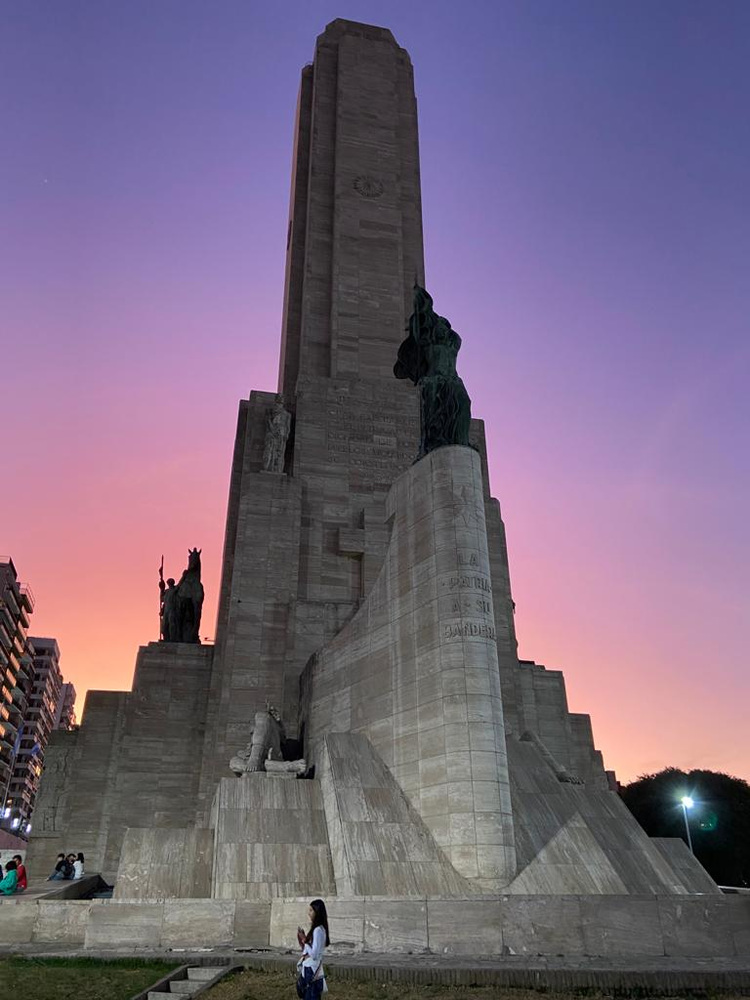
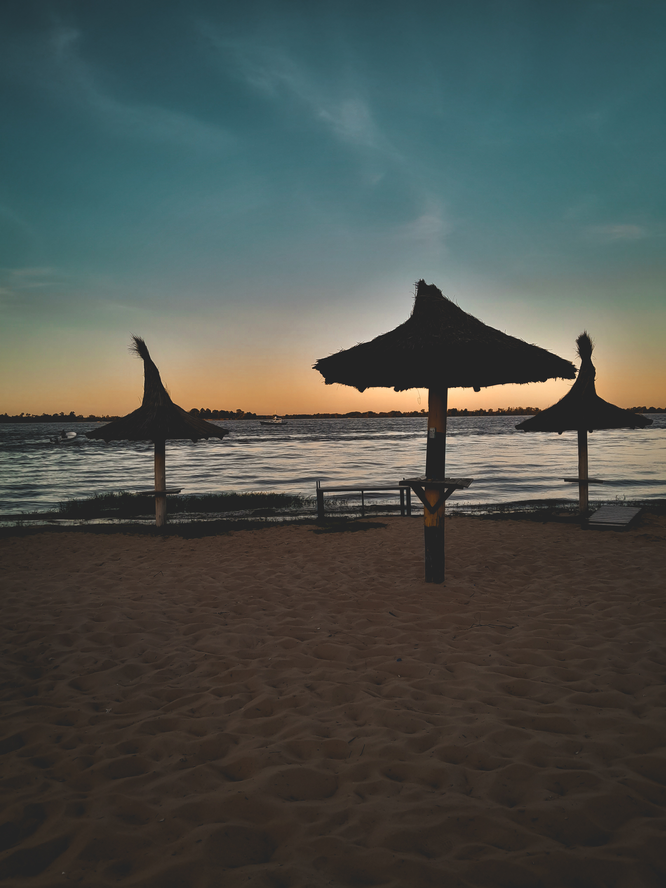
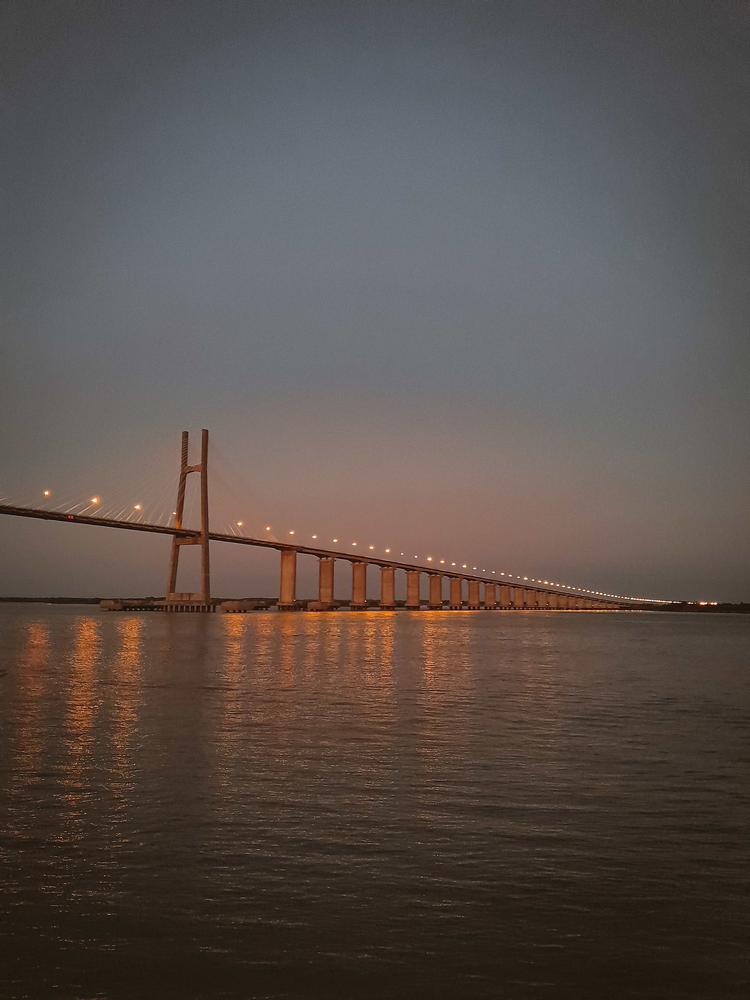

RECORRIDOS
RECORRIDO UNO:
"Explora la Historia y la Cultura": Sumérgete en el pasado de Rosario con una visita al icónico Monumento a la Bandera. Luego, adéntrate en el corazón histórico de la ciudad, descubriendo la arquitectura colonial y la vibrante Plaza 25 de Mayo. Termina en el Museo de Arte Contemporáneo, donde el arte local cobra vida.
RECORRIDO DOS:
"Conecta con la naturaleza": Comienza tu día con una caminata matutina por el pintoresco Parque de la Independencia. Luego, dirígete al río Paraná para disfrutar de deportes acuáticos emocionantes. Por la tarde, recorre el Jardín de los Niños para un toque de magia natural y diversión en familia.
RECORRIDO TRES:
Recorrido Nocturno: "Luces de la Costa": Adéntrate en la magia de la noche rosarina con este recorrido. Comienza en la Costanera, donde las luces del río Paraná crean un escenario impresionante. Pasea por el paseo ribereño, disfruta de la brisa y admira las vistas panorámicas. Termina en los bares y restaurantes cercanos para una velada inolvidable.